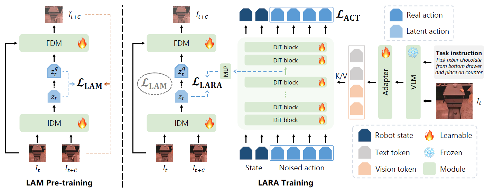
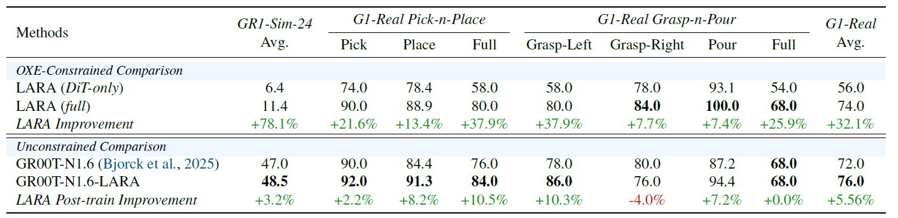
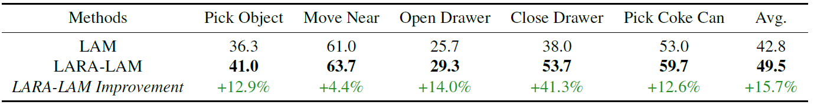
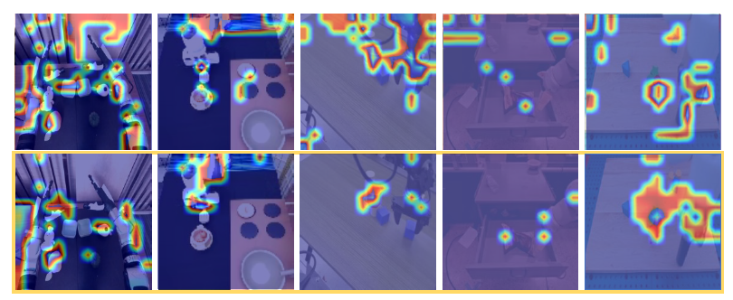

LAM Pre-Training
The latent action model learns a structured visual dynamics space from unlabeled videos using inverse and forward dynamics objectives.
ICML 2026
Jointly optimizing latent action models and diffusion-based VLA policies to bridge unlabeled videos with action-labeled robot demonstrations.
1State Key Laboratory of General Artificial Intelligence, BIGAI · 2Peking University ·3Delta Intelligence
Visual-language action (VLA) models enable robots to predict actions directly from observations and language instructions, but their performance depends on large-scale, high-quality data and is limited by the scarcity of real-world robot action datasets. To facilitate VLA model learning with abundant unlabeled human videos, Latent Action Models (LAM) learn latent action representations from visual dynamics to provide additional supervision for VLA learning. However, LAM and VLA are typically trained separately, leaving LAM ungrounded during VLA training and VLA models constrained by frozen LAM representations. To address these issues, we propose Latent Action Representation Alignment (LARA), a plug-and-play framework that jointly optimizes LAM and VLA via representation alignment. This enables reciprocal benefits where LAMs learn with action trajectories to avoid spurious visual changes, while VLAs are regularized by forward dynamics learned within LAMs to reduce hallucinations of functionally ineffective trajectories. We demonstrate LARA's versatility and effectiveness for pre-training, post-training enhancement of pre-trained VLA models, and LAM refinement, achieving an average of ~10%, ~5%, and ~15% improvement over 3 simulation and 1 meticulously designed real-world robotic manipulation benchmarks.

The latent action model learns a structured visual dynamics space from unlabeled videos using inverse and forward dynamics objectives.
The VLA policy and LAM are optimized together by aligning intermediate DiT features with latent action representations.
The same alignment mechanism supports full VLA training, post-training enhancement, and latent action refinement for pseudo-labeling.
LARA(DiT-only): We pre-train a vanilla DiT model directly on OXE data without representation alignment and then post-train on target datasets.
LARA-full model: We train the full LARA model by first pre-training the LAM model on OXE data with only reconstruction loss. This LAM is used for LARA joint pre-training on OXE-data and post-training on target datasets with an DiT initialized from scratch.
We evaluate LARA as a plug-and-play post-training enhancement module for existing diffusion-based VLA models (e.g., GR00T-N1.6), that's GR00T-N1.6-LARA, by applying the full LARA objective to jointly train the pre-trained GR00T-N1.6 model with anLAM on the post-training data.

We conduct a direct comparison of LAM by training two distinct Moto-GPT models on the OXE Fractal dataset from scratch and testing on the SIMPLER_ENV benchmark, utilizing latent tokens from a vanilla LAM and a LARA-aligned LAM (LARA-LAM) both trained on OXE data, respectively.


@inproceedings{liu2026lara,
title={LARA: Latent Action Representation Alignment for Vision-Language-Action Models},
author={Liu, Mengya and Jia, Baoxiong and Huang, Jiangyong and Zhang, Jingze and Huang, Siyuan},
booktitle={Proceedings of the 43rd International Conference on Machine Learning},
year={2026}
}